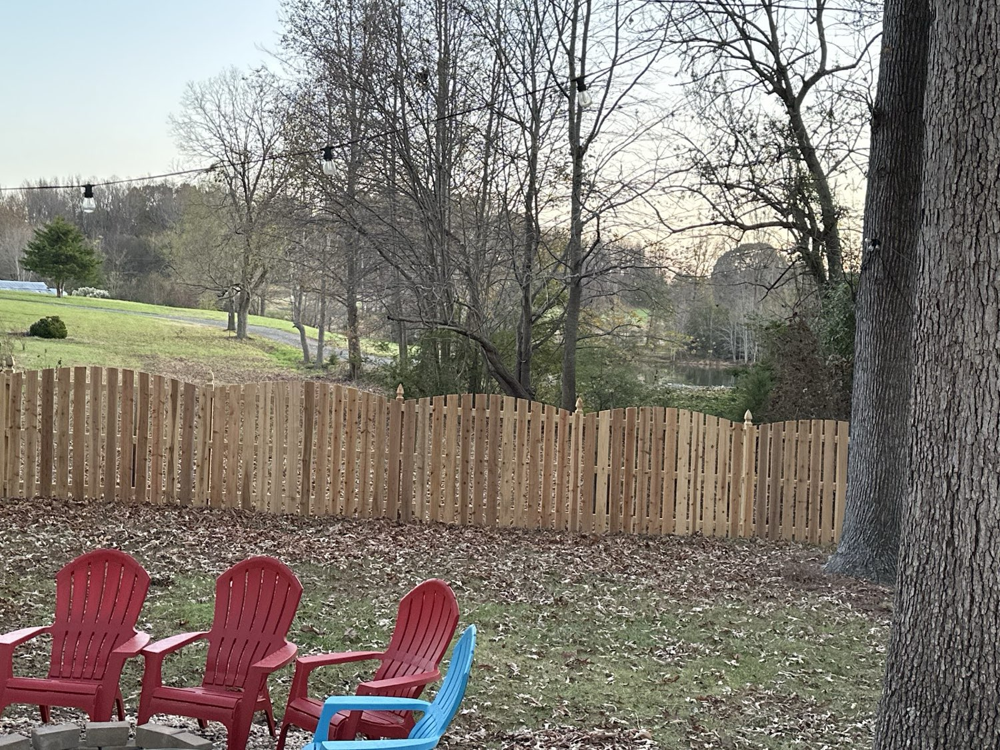
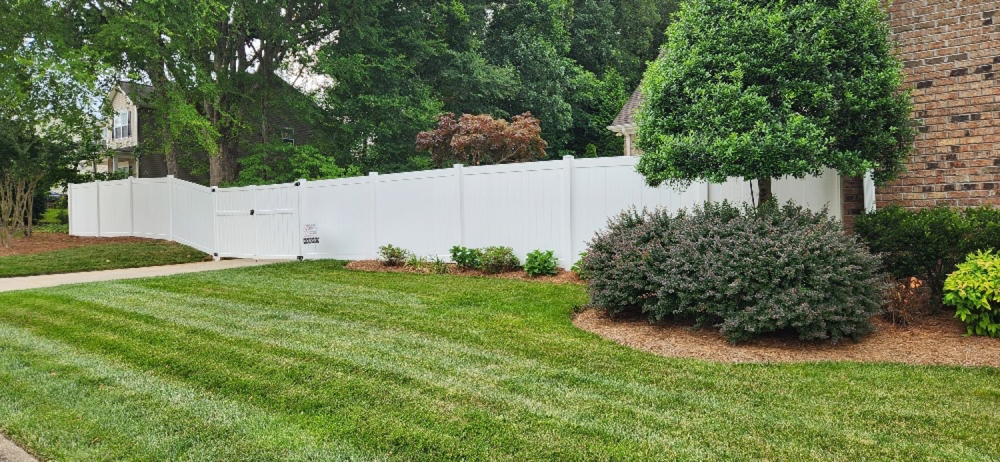
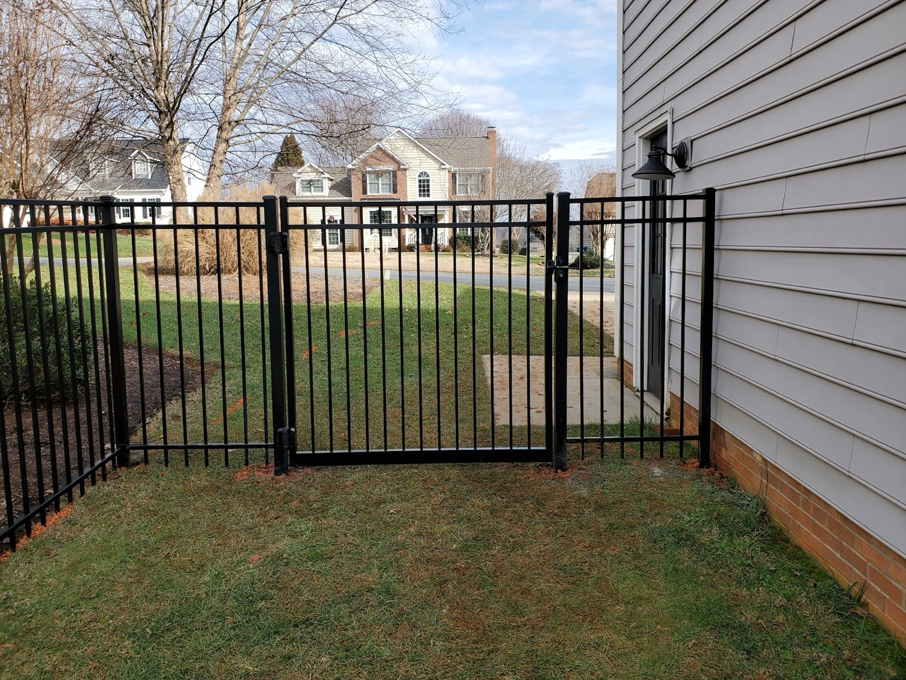
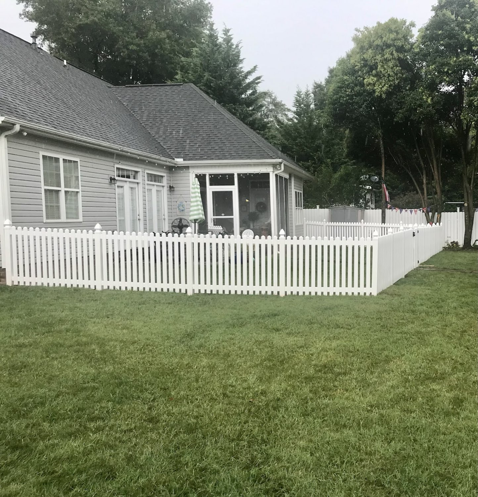
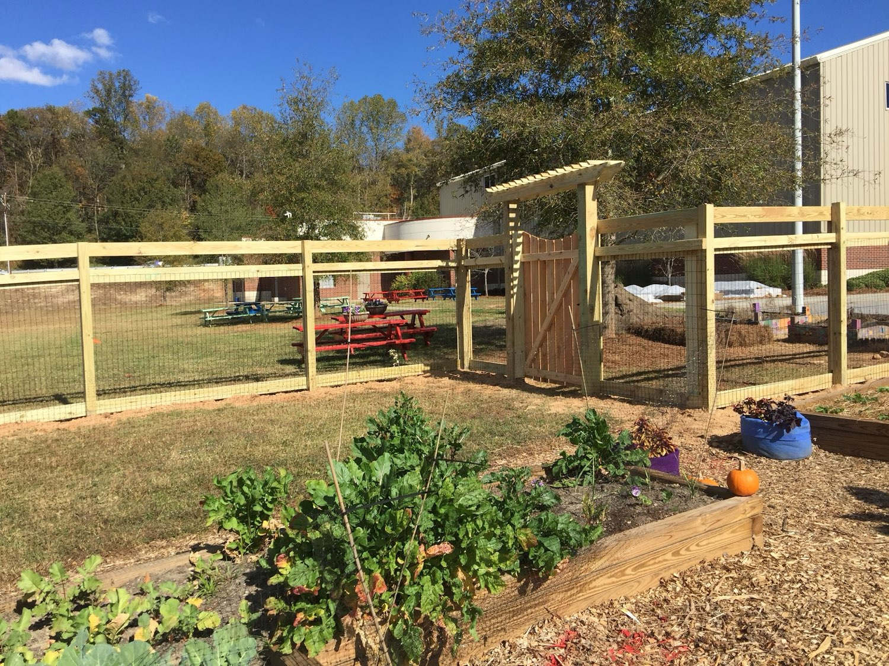
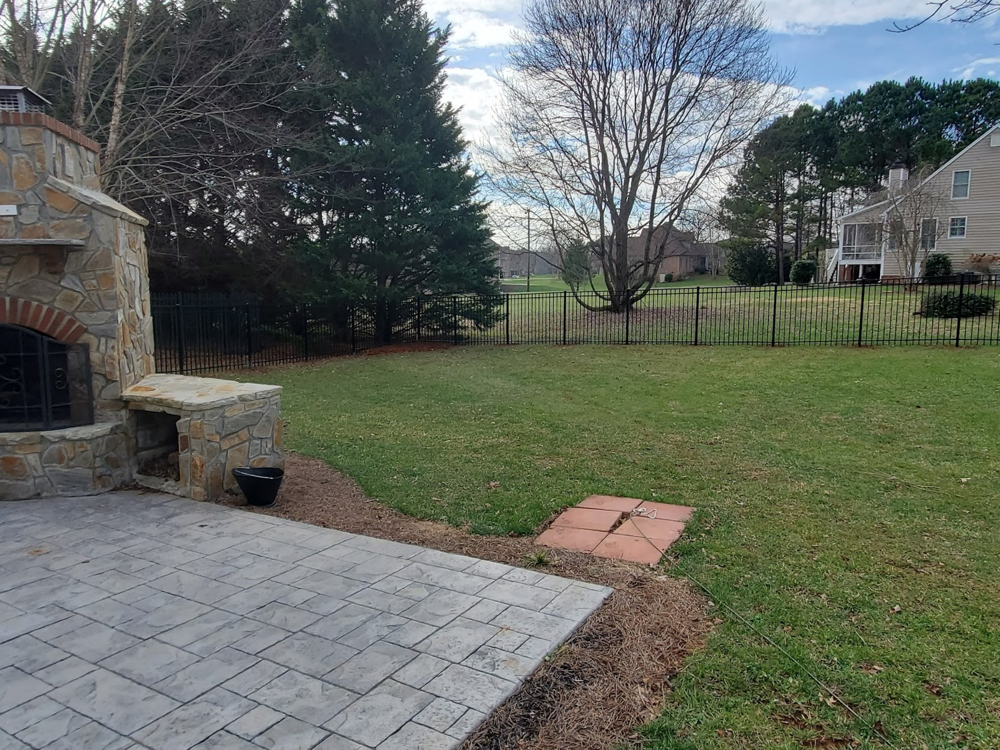
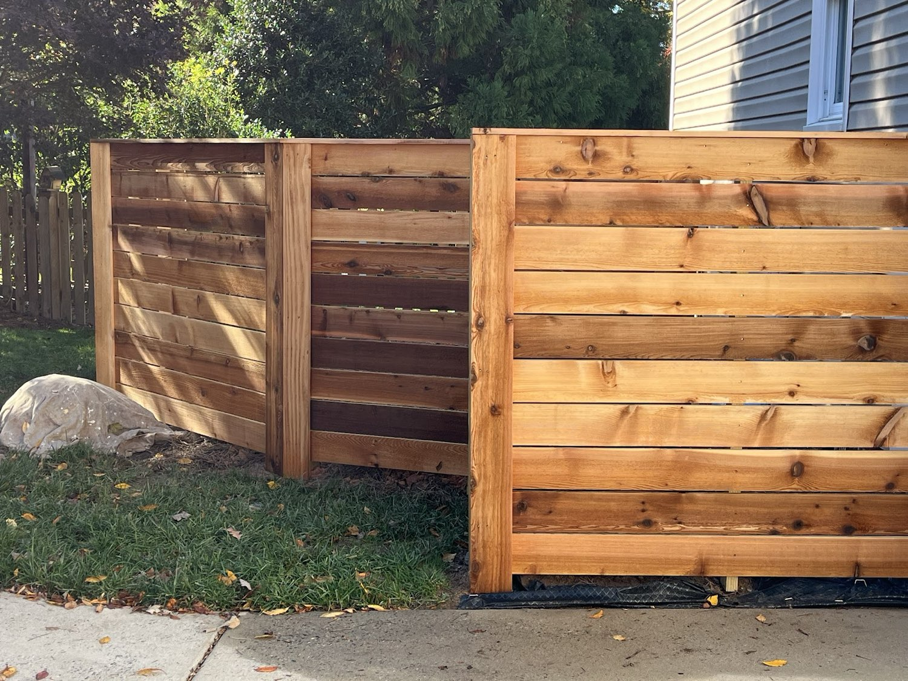
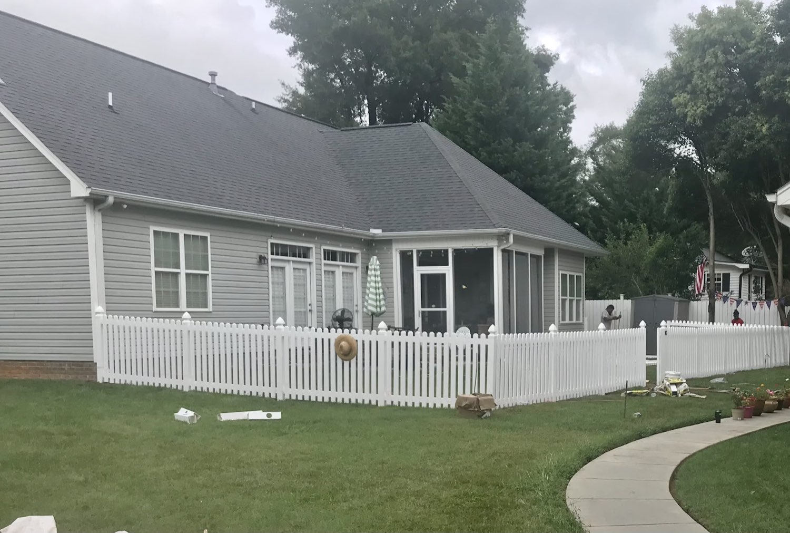
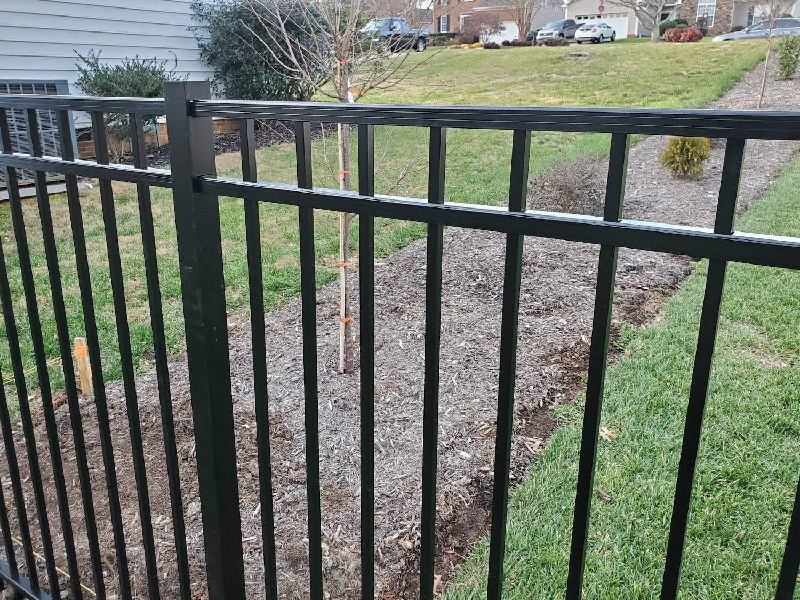

Fence Contractor · Kernersville, NC
Fences your neighbors stop to ask about.
Wood, vinyl and aluminum fences — designed for your yard, set deep, and built to last across Kernersville and the Triad. Honest pricing, quality materials, your property left clean.
4.9
Google rating
48
Google reviews
3
Fence materials
Free
On-site estimates
What we build
Pick your fence by material
Every photo below is a fence Holman installed here in the Triad — choose the look that fits your yard and we'll walk it with you and quote it.

Vinyl / PVC

Aluminum & Ornamental

Picket & Yard Fence

Split-Rail & Ranch

Gates & Repairs
Get a Free Estimate
Not sure which fits? Tell us the yard — Holman will recommend the right material and price.
Recent installs
Real fences on real Triad properties
Every photo here is one of Holman's own jobs — no stock images. Wood, vinyl and aluminum across Kernersville, Winston-Salem, Greensboro and High Point.



Why Holman
Built right the first time
Posts set deep
Quality materials
Yard left clean
Fair, honest pricing
How it works
A straightforward four-step job
01
Walk the yard
02
Design & measure
03
Clean installation
04
Walkthrough & cleanup
What customers say
4.9 on Google · 48 reviews
"I can't count the people who have stopped and asked who did my fence. These folks did one outstanding job. My neighbors are envious. I highly recommend them. We are very pleased."
"His prices were competitive and beat contractors recommended by Home Depot and Lowe's. His guys had my fence up in a day and a half. The fencing materials are high quality and I have no doubt it adds to my home's value."
"I had three different fence companies come out before I made a decision. Holman was by far the best choice for us. They took the time to design a fence I could enjoy seeing while keeping the dogs safe — and did not try to talk me into the most expensive option."
Leave us a Google review
Reviews shown verbatim from our Google Business Profile.
Get started
Ready for a free estimate?
Call or text and tell us about your project — material, rough length, your timeline and your town. We'll set up a free on-site estimate across Kernersville and the Triad.
Hours
- Monday – Friday
- 8:00 AM – 5:00 PM
- Saturday – Sunday
- Closed
Holman Fence · Kernersville, NC 27284 · serving Kernersville, Winston-Salem, Greensboro, High Point & the Triad